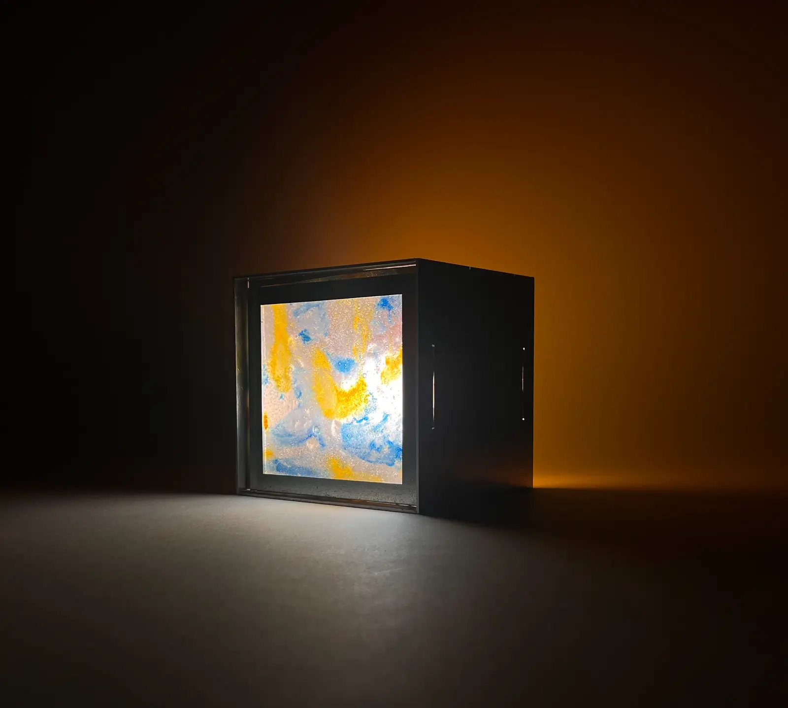
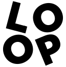

← Torna al sitoScopri la lampada
Davanti vedi la bioplastica in controluce, con tutte le sue texture. Dietro, la luce colorata tinge il muro. Gira la lampada, regola la luce, cambia bioplastica e colore della struttura.
Trascina per girarla, in su e in giù per guardarla dall'alto, rotella o due dita per avvicinarti